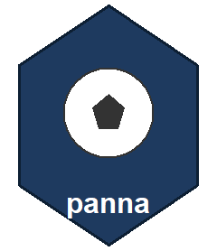

Per-kick win probability and WPA for one shootout
Source:R/shootout.R
score_shootout_kicks.RdScores every kick of a single penalty shootout: the live win probability
after each kick (from shootout_win_prob) and the WPA that kick
produced — the change in the kicking team's win probability, credited to the
kicker. This is purely successive differences of the win-prob function; no
separate model.
Usage
score_shootout_kicks(
kicks,
p_a = PENALTY_SHOOTOUT_CONVERSION,
p_b = PENALTY_SHOOTOUT_CONVERSION,
keeper_save_share = 0.5,
n_regulation = 5L
)Arguments
- kicks
A data.frame/data.table of one match's shootout kicks, already filtered to shot-outcome events (
type_idin 16/15/14/13) inperiod_id >= 5, with columnsteam_id,scored(1 = goal), optionallytype_id(to split saved misses), and pre-sorted into the order the kicks were taken. The team of the first row is treated as the first kicker ("A").- p_a, p_b
Per-kick conversion rates. Default
PENALTY_SHOOTOUT_CONVERSION(0.75) for both.Fraction of a SAVED miss's WPA attributed to the saving keeper (re-credited positively to the defending team). Default 0.5. Set 0 to keep all blame on the taker (old behaviour).
- n_regulation
Regulation kicks per team. Default 5.
Value
The input as a data.table with added columns:
- wp_first_kicker
P(first-kicking team wins) AFTER this kick
- shootout_wpa
WPA credited to the TAKER's team (+ = helped taker). For a saved miss, this is reduced by the keeper's share.
- keeper_wpa
Positive WPA credited to the SAVING keeper's team on a saved miss (
type_id == 15); 0 otherwise. Belongs to the team that did NOT take the kick.
Details
WPA sign convention: positive = the kick helped the KICKER's team. A scored kick is a small positive (a 0.75 conversion is largely "priced in"); a miss is a larger negative (the surprising outcome moves WP more). Sudden-death kicks swing far harder (±0.3-0.4) than early regulation kicks (±0.05).
Keep shootout WPA in its OWN column — never add it to open-play WPA. A single sudden-death kick (~±0.4) would swamp a whole match of open-play events (~±0.05 each).
Taker vs keeper attribution: a missed kick's negative WPA is split by HOW it
missed. A keeper-SAVED miss (type_id == 15) is partly the keeper's
doing, so keeper_save_share of the (negative) WPA is re-credited as a
POSITIVE keeper_wpa for the opposing team's keeper, and the taker
keeps the rest. An off-target miss (skied/post, type_id 13/14) is all
on the taker — no keeper involvement. Scored kicks and the taker portion stay
in shootout_wpa. If type_id is absent, every miss is treated as
all-taker (the simple default) and keeper_wpa is all zero.
See also
Other penalty shootouts:
aggregate_shootout_wpa(),
is_shootout_period(),
shootout_win_prob()